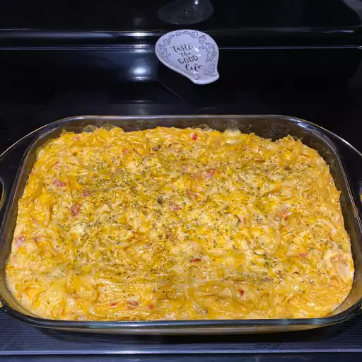

Chicken Spaghetti

Chicken Spahgetti Description
Chicken spaghetti is made with a creamy, cheesy, super flavorful cream sauce that coats tender chicken and spaghetti noodles. The mixture is then placed in a casserole dish and baked until it’s gooey and bubbly around the sides.
Ingredients
- 1 (8 ounce) package spaghett
- 2 cups boneless chicken breast half, cooked and diced
- 1 (4 ounce) jar chopped pimento peppers
- 1 (10.5 ounce) can condensed cream of mushroom soup
- ½ green bell pepper, diced
- 1 ½ cups shredded, processed American cheese
Steps
- Preheat the oven to 250 degrees F (120 degrees C).
- Bring a large pot of lightly salted water to a boil. Add pasta and cook until al dente, 8 to 10 minutes; drain.
- Mix cooked spaghetti, diced chicken, pimentos, condensed soup, bell peppers, and cheese together in a large bowl. Pour into a large casserole dish.
- Bake in the preheated oven for 90 minutes. Serve immediately.